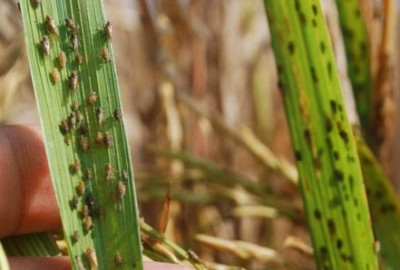
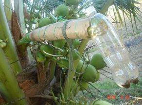

Wereng adalah jenis serangga yang besarnya hanya sekitar
butiran beras yang merupakan hama pada tanaman padi.
Hewan ini mempunyai daya penyebaran yang sangat cepat
dan ganas sebagai hama tanaman padi yang sangat sulit
untuk diberantas karena bertengger pada panggal daun
padi. Wereng merupakan serangga penghisap tumbuhan
dari anggota Ordo Hemiptera (Kepik Sejati),
Subordo Fulgoromorpha, khusunya yang berukuran kecil.
Hewan ini juga bisa menjadi vektor begi penyebaran
virus yang menjadi penyakit pada tumbuhan penting.
Berikut ini adalah jenis-jenis dari Wereng:
-
Wereng Coklat (nama ilmiah: Nephotettix spp)
serangga kecil yang mempunyai warna cokelat
sebagai penyerang dan memusnahkan buah padi
yang baru mulai muncul, berkembang biak
dan penyebarannya sangat cepat,
daur hidupnya pendek, serta mempunyai
daya serang yang sangat ganas.
-
Wereng Hijau (nama ilmiah: Nilaparvata Lugens)
serangga ini besarnya sekitar sebesar beras,
biasanya penetasannya pada pelepah daun padi
dan jangka waktu penetasannya 6 hari,
menyerang daun untuk mengambil cairan
daun sehingga daun menjadi kering.
-
Wereng Punggung Putih (nama ilmiah: Sogtella Furcifera),
tubuh serangga ini tubuhnya lebih kecil
dari butiran padi, sebagai penghisap batang padi,
jagung, dan rumput-rumputan sehingga tumbuhan tersebut akan kering.
Berikut ini cara mengatasi hama wereng pada tanaman padi secara alami:
Meskipun sudah banyak obat kimia yang sudah digunakan
dan hasilnya pun cukup bisa melumpuhkan penyebaran hama
wereng namun tentu saja itu bisa ada efek samping
bagi manusia yang mengkonsumsi padi tersebut,
meskipun pada kadar yang sangat rendah.
Berbagai obat-obatan pemusnah/pembunuh hama untuk
serangga semacam ini sudah banyak dijual di toko-toko pertanian.
Namun demikian kali ini kami ingin membagi pengalaman
tentang cara membunuh hama wereng serta guna
untuk menghambat penyebarannya dengan bahan alami
sehingga orang yang mengkonsumsi padinya pun aman
dan juga hewan ternak yang memakan daun dan pohon padinya pun
tidak ikut terkontaminasi zat adiktif.
Selain itu manfaat/kegunaan yang lainnya juga biayanya
pun jadi lebih murah karena bahan ini mudah didapat.
Mungkin penasaran apa bahan alaminya?
Bahan alaminya adalah Nira dan air yang dicampur.
Nira atau sajeng adalah air dari bunga kelapa
yang rasanya manis sebagai bahan dasar gula kelapa/merah.
Cara menggunakannya adalah oploslah kedua bahan itu 1:2.
Misalnya 1 Liter Nira + 2 Liter air kemudian
di aduk hingga merata pada tanaman padi yang belum atau mulai
terkena wereng. Cara kerjanya secara logika wereng
akan menempel dan kaku karena zat gula yang lengket pada nira tersebut.
Demikianlah bagi-bagi pengalaman dari kami,
semoga tanaman padi kita aman dari hama wereng dan
hasil panen kita pun melimpah.

Nira bahan dasar untuk membuat gula merah
Sebaiknya jarak antara tanaman padi adalah 35-40 cm
agar supaya tanaman padi dalam mendapatkan cahaya matahari
untuk berfotosintesis lebih maksimal dan hasilnya pun
jumlah batang tanaman padi akan lebih banyak dan
lebih subur serta hemat pupuk dan hasil buah padinya
akan lebih banyak dari pada cara penanaman padi dengan jarak
yang lebih dekat (misal 20 cm-25 cm saja).[]
Sumber : https://dispertan.bantenprov.go.id/lama/read/artikel/963/Cara-Alami-Mengatasi-Hama-Wereng-Pada-Tanaman-Padi.html